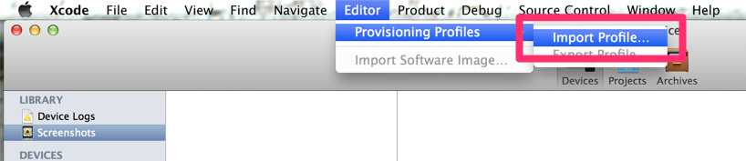

千葉・金谷で開発合宿やってきた
コミュニティースペース「まるも」さんにお世話になった。利用したのは 開発合宿プラン｜千葉県金谷のまるもで開発合宿しませんか？ で WiFi はもちろん、宿の手配までお願いできた。いたれりつくせりである。

テラス的なのがあったり。

お菓子やコーヒーまで用意してもらったり。

貸切の作業スペースの広さは申し分なし。聞くところによると 15 名ほどでの作業も余裕とのこと。

偶然、花火大会と日程がかぶっていたのでついでに。

町の小さな花火大会だけど距離が近くてなかなかの迫力。

海の側の町なので海産物がおいしいとのことだったが今回はあまり食べられず。次の機会を楽しみにしよう。おわり。
Docker 上の MySQL に dump を適用する
hub.docker.com OFFICIAL REPOSITORY mysql なんかを起動して dump ファイルを適用したいときは下記でいける。ポイントは -t オプションをつけないこと。
$ docker exec -i {CONTAINER ID} mysql {CREDENTIALS} {DB} < dump.sql
Supervisor で touch-reload する Eventlistener
つくった。
作った動機とか用途とか
Wercker で CI しつつデプロイする先がさくら VPS 上の FreeBSD jail という構成のアプリを デプロイのたびに再起動する方法を考えていて、uWSGI の touch-reload オプションみたいなのがあればできそうだなーと思いあたってそのまま実装した。
使いかた
動作環境やら事前準備やら
- Python 2.7
- Supervisor, watchdog インストール済み
- touch_reload_event_listener.py を適当な場所にダウンロード
設定
Supervisor の conf ファイルに下記を記載して $ supervisorctl reload する。トリガーファイルを touch すると指定した program が再起動するはず。
今回は jail 内の Supervisor を調整したいのでこんな /usr/jails/{container}/home/{user}/{program}.reload 感じのパスを touch すると無事再起動された。あとは SSH しつつ叩くだけ。
[eventlistener:touch_reload]
command={Python 2.7} {touch_reload_event_listener.py のパス} -p {Supervisor 上の program_name} -f {トリガーファイルのパス}
events=PROCESS_STATE
参考にしたもの
superlance の memmon.py を全力で参考にした。
[Jenkins] Amazon EC2 Plugin でスレーブがうまく動作しないときに確認すること
Amazon EC2 Plugin を利用して分散ビルド的なことをしたかった際にいくつかつまづいたのでメモ。プラグインそのものが原因であることはそんなになかったかも。
ラベルをまたいで同じ “AMI ID” を設定していないか
“Jenkins > configuration” 内 “Cloud > Amazon EC2 > AMIs > Labels” にてラベルを設定し、特定のジョブを実行するインスタンスを制限する、ということができる大変便利な機能がある。
しかし “Instance Cap” と “ラベルをまたいで同じ AMI ID を設定” の条件を満たしている場合に、起動数のカウントがラベルをまたいで合算されてしまい “Instance Cap” にひっかかり、期待よりも少ない数のインスタンスしか起動しない、という挙動にぶつかってしまった。
さしあたって AMI をコピーし、別の AMI ID を発行して難をのがれたがしばらく原因がわからず時間を浪費した。
issue としてリストされているようなので、いずれ解決されることに期待。
スレーブのローカルストレージの空きは十分か
“Jenkins > nodes” から設定できるように、ローカルストレージの空きが閾値以下になると該当するノードでのタスク実行を行わなくする機能がある。
Amazon EC2 Plugin ではいちど起動した EC2 インスタンスを再利用するため、タスク実行の際に発生したデータをストレージに貯めてしまい、この閾値にひっかかることがあった。
EC2 インスタンスの起動数上限に逹していないか
Amazon EC2 サービスの制限 にあるとおり、起動できる EC2 インスタンスの数にはリージョンごとに制限がある。 必要であれば制限緩和のリクエストを投げることができるので対応すること。
既存の git リポジトリを backlog に移行する
自前で管理していた共有の Git リモートリポジトリを backlog に移行したときのメモです。
リポジトリの移行
リモートリポジトリをローカルに clone している前提です。
$ cd {ローカルリポジトリのルート}
$ git remote -v # リモートリポジトリの URL を確認
$ cd ..
$ clone --mirror {リモートリポジトリ} repository_bare
$ cd repository_bare
$ git push --mirror {backlog のリモートリポジトリ URL}
チームへの共有
チームには下記コマンドをローカルリポジトリのルートで叩いてもらいましょう。
$ git remote set-url origin {backlog のリモートリポジトリ URL}
MySQL 5.6 を MacPorts で Mac OS X Mavericks にインストールしたときのメモ
$ sudo port install mysql56-server でいけると思っていたらどうもビルドがこける。 ぐぐるとパッチを当てて回避しているひとがいるみたいなので試してみた。 http://bugs.mysql.com/bug.php?id=70542
環境とか
- Mac OS X 10.9 Mavericks
- Command line tools インストール済み
- MacPorts 2.2.1
- MySQL 5.6.13
MySQL にパッチを当てる
上記ウェブサイトで fix-build-on-macosx-9.patch を検索するとリンクが見つかるので、そこからパッチを落とす。また、以下のコマンドでインストールせずに MySQL のソースだけを落とす。
$ cd ~
$ sudo port clean mysql56-server
$ sudo port -f patch mysql56-server
ソースのディレクトリに移動してパッチを当てる。
$ cd /opt/local/var/macports/build/_opt_local_var_macports_sources_rsync.macports.org_release_tarballs_ports_databases_mysql56/mysql56/work/mysql-5.6.13/include
$ sudo patch -p 0 < ~/Downloads/fix-build-on-macosx-9.patch
インストールを実行。
$ cd ~
$ sudo port -f install mysql56-server
$ sudo -u _mysql /opt/local/lib/mysql56/bin/mysql_install_db
$ sudo port load mysql56-server
$ /opt/local/lib/mysql56/bin/mysqladmin -u root password 'パスワード'
ログインできたら成功。
$ mysql56 -uroot -p
補足
mysqld_safe が動かなかったので修正した記録と記憶が残っていたのだけど、本当に必要な操作であったかを覚えていない…。念のため diff を貼っておく。
--- mysqld_safe.org 2013-11-20 22:35:24.000000000 +0900
+++ /opt/local/lib/mysql56/bin/mysqld_safe 2013-11-20 22:36:11.000000000 +0900
@@ -719,24 +719,22 @@
# Note: The switches to 'ps' may depend on your operating system
if test -f "$pid_file"
then
- PID=`cat "$pid_file"`
- if kill -0 $PID > /dev/null 2> /dev/null
- then
- #if
- #then # The pid contains a mysqld process
- # log_error "A mysqld process already exists"
- # exit 1
- #fi
- fi
- rm -f "$pid_file"
- if test -f "$pid_file"
- then
- log_error "Fatal error: Can't remove the pid file:
+ PID=`cat "$pid_file"`
+ if kill -0 $PID > /dev/null 2> /dev/null
+ then
+ # The pid contains a mysqld process
+ log_error "A mysqld process already exists"
+ exit 1
+ fi
+ rm -f "$pid_file"
+ if test -f "$pid_file"
+ then
+ log_error "Fatal error: Can't remove the pid file:
$pid_file
Please remove it manually and start $0 again;
mysqld daemon not started"
- exit 1
- fi
+ exit 1
+ fi
fi
#
[Shift_JIS] JIS 基本漢字 (JIS X 0208) 第1・2水準漢字を表わす正規表現
PHP を使って、ある文字列中に JIS 基本漢字 (JIS X 0208) の第 1・2 水準漢字以外のものが含まれているかどうかの判定を実装したかったのですが、いろいろと苦労した & 結局最悪の実装をしたのでその顛末と途中の成果物をここに記します。
これらのウェブサイトがとても参考になりました。
Unicode と JIS 基本漢字コードではその出現順が異なる
JIS X 0208 (1990) to Unicode 漢字コード表 の 16 区以降を見るとわかる通り、 Unicode と SJIS のコード順は異なります。 よって、UTF-8 の文章に対してよくみる [亜-椀] では、うまく第 1 水準漢字だけにマッチすることはできないのです。
たとえば、 逢：E980A2 (UTF-8) は 亜：E4BA9C (UTF-8) - 椀：E88595 (UTF-8) の間には収まらない、といった風に。
Unicode で範囲マッチできないなら SJIS でやればいいじゃない
今回の目的を達成するには UTF-8 のまま扱うのはとてもしんどいので、マッチさせるときだけ SJIS にエンコードしてしまいましょう。 Python でやるならこんな感じ。
1 2 3 4 5 6 7 8 9 10 | import re
# 第 1 水準漢字（16 - 47 区）にマッチ
regexp_for_JIS_16_TO_47 = re.compile(r'\x88[\x9F-\xFC]|[\x89-\x97][\x40-\xFC]|\x98[\x40-\x9E]')
# 第 2 水準漢字（48 - 84 区）にマッチ
regexp_for_JIS_48_TO_84 = re.compile(r'\x98[\x9F-\xFC]|[\x99-\xE9][\x40-\xFC]|\xEA[\x40-\xA4]')
# SJIS にエンコードしてマッチング
regexp_for_JIS_16_TO_47.match(u"腕".encode('sjis'))
|
結局 PHP では SJIS コードを指定する正規表現が使えなかった
PHP で正規表現を利用したマッチングといえば preg_match ですが、マルチバイトの文字列を対象とする場合は UTF-8 しか受け付けないとのこと。これでは折角用意した正規表現が使えない…
ならば ereg を使えばよいかというと
この関数は PHP 5.3.0 で 非推奨となりました。 この機能を使用しないことを強く推奨します。
とのこと。結局あきらめて、 第1・2水準漢字すべてを羅列した正規表現 を用意したのでした。これは書くまでもないので割愛。というか思い出したくない。
[Ubuntu][VNC]さくらの VPS で VNC をはじめるまでのメモ
とにかくインスタントに VNC をはじめるための手順です。
環境
- さくらの VPS
- Ubuntu 12.0.4 amd64
手順
デスクトップ環境のインストール
$ sudo apt-get install --no-install-recommends ubuntu-desktop
VNC サーバのインストール
$ sudo apt-get install vnc4server
VNC サーバを起動して初期設定
初回起動で、パスワードの設定を行ないます。とりあえず起動したらすぐ停止。同時に ~/.vnc 以下に設定ファイルが配置されます。
$ vncserver :1
$ vncserver -kill :1
VPS 接続時に GNOME が起動するように下記の設定を追記。
$ echo "gnome-session --session=ubuntu-2d &" >> ~/.vnc/xstartup
設定ができたのでもう一回起動。
$ vncserver :1
Mac OS X から VNC サーバへ接続
Mac OS X から接続してみましょう。デフォルトで VNC クライアントが入っているなんて Mac さん素敵。
- Finder で ⌘+k を叩いて「サーバへ接続」を開く
- 「サーバアドレス」に「vnc://user_name@ip_address:5901」を入力
- 「接続」で「画面共有」が立ち上がり GNOME デスクトップを利用できるようになります。
[Emacs 24] ふつうの正規表現を使いたい foreign-regexp で 鬼車を使う
Emacs の正規表現 はほんとにつらい。 syntax_classes のブラケットにもバックスラッシュが必要だったりととにかくバックスラッシュ地獄で、リプレイスするのにわざわざ別のエディタ使うレベル。
foreign-regexp でラクしましょう。外部コマンドに Ruby を指定することで、 豊富な表現で再帰まで使える 正規表現ライブラリ 鬼車 をインクリメンタルサーチやリプレイスに利用できます。
インストールした環境
- Mac OS X 10.8.5
- Emacs 24.3.1
- ruby 1.9.3p392 (rbenv)
インストール手順
package-install できます。これを *scratch* バッファにでもコピーして C-x C-e でおしまい。
(package-install 'foreign-regexp)
.emacs に追記。 foreign-regexp/regexp-type には perl / ruby / javascript が指定できるようです。今回は 鬼車 が使いたいので ruby を指定。
(cond ((require 'foreign-regexp nil t)
(custom-set-variables
'(foreign-regexp/regexp-type 'ruby)
'(reb-re-syntax 'foreign-regexp))))
使い方をさっくりと
- インクリメンタルサーチ
- M-s M-s
- インクリメンタルサーチ(逆方向)
- M-s M-r
- リプレイス
- M-s M-%
これでわかりやすい正規表現を使える!!
エスケープ地獄から開放される幸せ。
- 例：連続したひらがなをインクリメンタルサーチ
- M-s M-s \p{Hiragana}+
- 例：連続したひらがな以外の文字をインクリメンタルサーチ
- M-s M-s \p{^Hiragana}+
がんばるともっといろいろできます。 回文や XML にマッチする鬼車の正規表現 - まめめも
[Xcode5.0] プロビジョニングプロファイルの追加がわかりづらくて困った
ここにあります
Xcode を 5.0 にアップデートして一番困ったのがプロビジョニングプロファイルの追加。以前は Organizer を開いてすぐに見付かる場所にあったのが、メニューの中に移動されてしまったようです。
Organizer を開いた状態で メニューバーの Editor -> Provisioning Profiles -> Import Profile... でファイル選択ダイアログが開きます。
{kind=link}